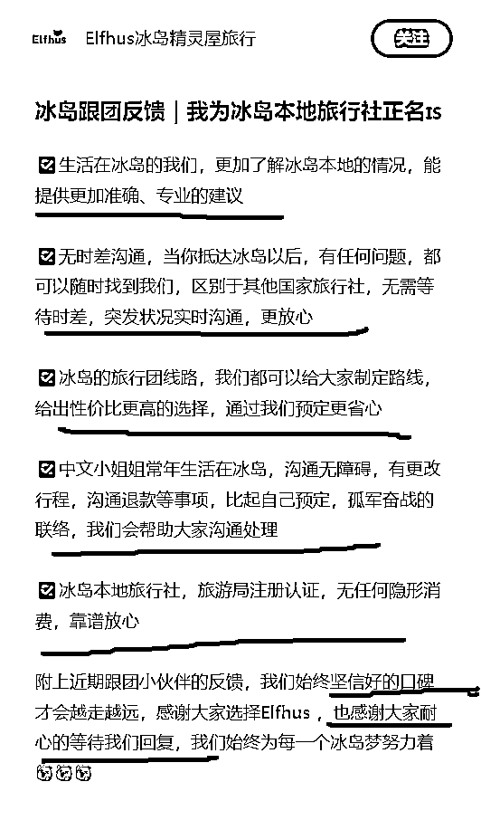
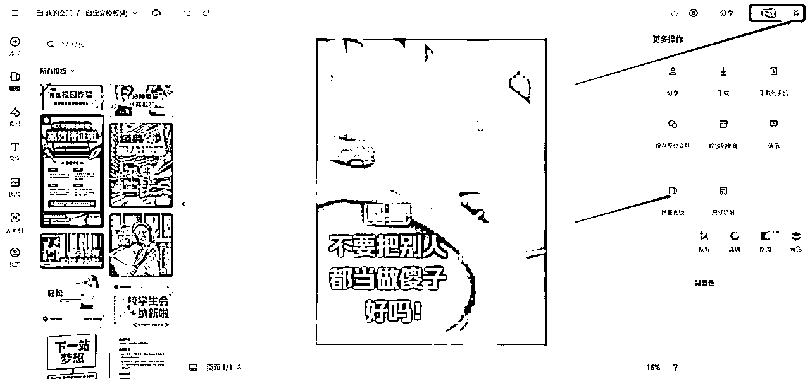
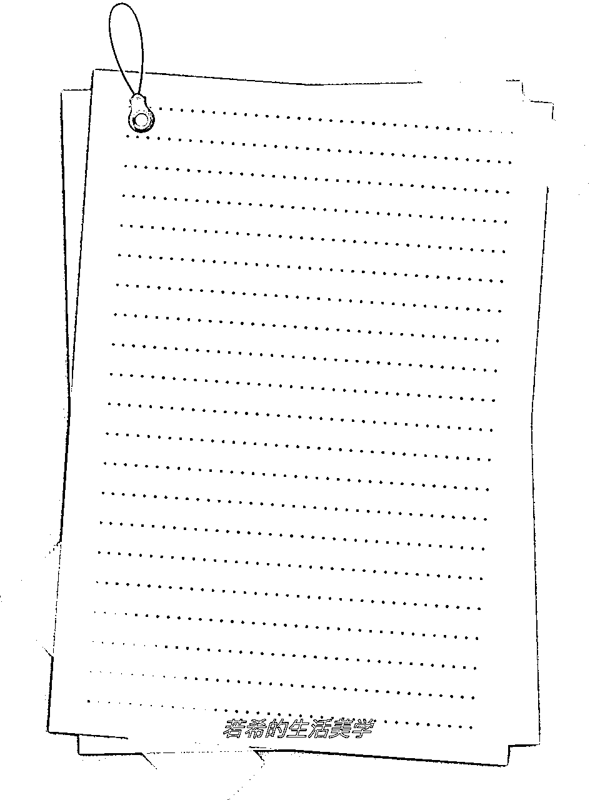
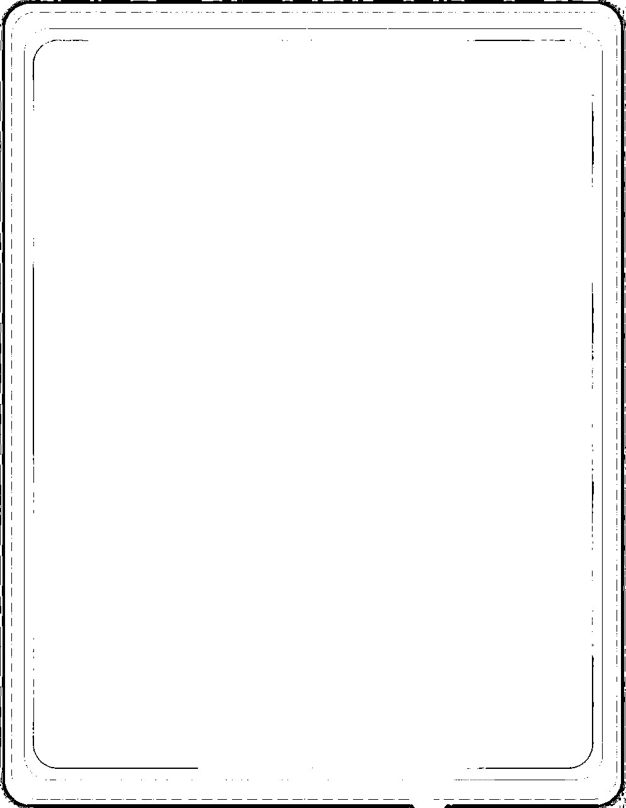
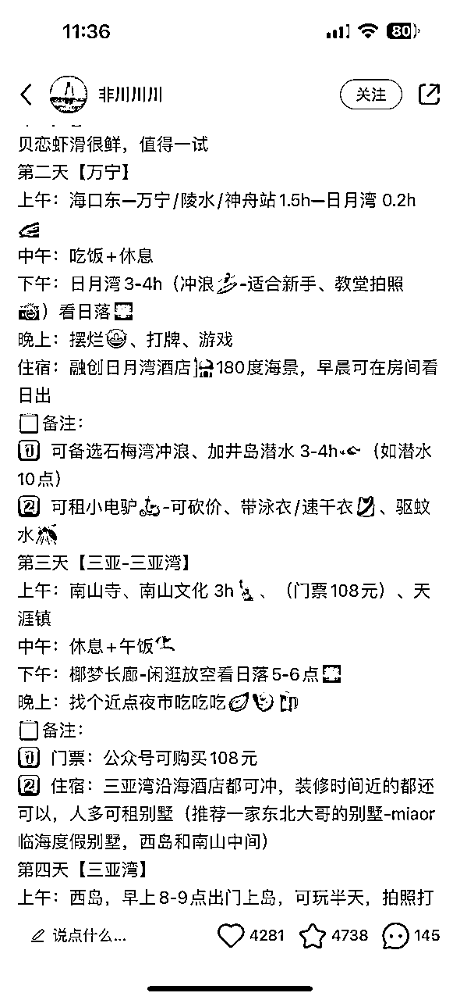
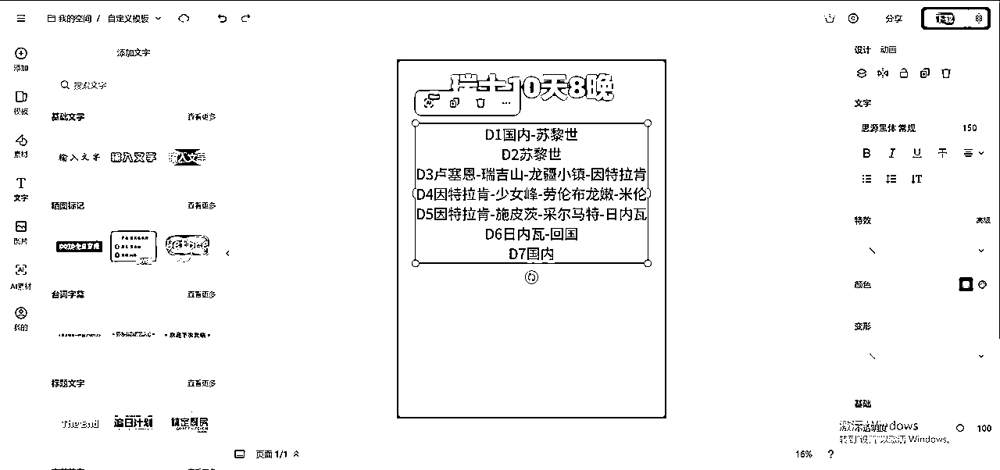

来源：https://xsej9se9cv.feishu.cn/docx/NYK4d5hEKoaTI3xOEVvc2PJCnjb
不善于水文章，不凑字数，全文不说废话，直接上干货
说实话，这个文档可能会被某些同行直接偷走拿去培训之类的，不过我还是发了
哈喽，大家好，我是傅超人，好久没在生财分享保姆级操作教程了
我下面写的 SOP，直接照着一比一做就能出单，大家有资源的，可以直接上矩阵，可复制性直接拉满！
之前也写过一些精华文，我筛选了几条不过时的放在这，感兴趣的也可以了解一下哈哈
也欢迎想做旅游或者已经在做旅游的圈友来链接交流呀～
欢迎链接沟通，abcfjj123
备注圈友
22 岁，毕业半年，我赚了 50W
https://mp.weixin.qq.com/s/2Ia-bdYlfRKUXHbhO8aP7g
小白如何快速成长
https://mp.weixin.qq.com/s/ScsBsTeHnbCIBlO0KBZUHw
今年 8 月接触了出境游这个赛道，摸索了一个月，从此一发不可收拾，跑通流程之后，准备批量放大，所以 10 月中旬开始做了训练营（后端分成跟我们绑定），学员 10 天左右就出了四单（找设备，养号需要时间）
我们的学员都是非旅游行业的从业人员，在短短的时间就跑通了流程，说明这个小红书旅游项目对于新手小白来说，是能够快速拿到正反馈的。
为什么，这个赛道这么容易出成绩呢？
我先简单介绍一下这个赛道，
境外游，过去三年，由于口罩原因，境外游其实已经没有了
在今年市场重新恢复，一切都重新洗牌
我们是跟传统旅行社去抢市场做线上流量，跟他们竞争，那不是降维打击吗
而且门槛比较高，因为靠谱且专业的后端资源很难，一般旅行社对境外不专业，做不了。
一般产品 5%～10%
极端的可达到 20%、30%甚至更高
我们按照一般的产品来算，平均客单价在 2W～5W
而且一般都是两人以上出行
甚至有的 10+，20+人一起出行
几个家庭一起，公司团建
我们这里只算 2 人出行
一单客单价在 4W～10W
按 5～10%来算
对应的佣金为 2000～1W
欧洲、美洲、大洋洲、非洲、南北极......
日本、伊朗、尼泊尔、巴厘岛、马尔代夫......
全球都能做，每一个地区都算一个细分赛道，我有一个朋友，光做 XX 一个国家，去年一个账号在红薯上都做了 500W 的销售额。
而且用户加到私域以后，可以运营起来，会有复购！
缺点：行业性质，成交周期会比较长，平均下来，一般得两周到一两个月才能成交，快的话可能一周多就能出单（注：我们学员快的 10 天出单），对应的佣金结算周期稍微长一些，得等到客户旅完游结算。
这篇文档，是旅游项目在小红薯引流的保姆级 SOP，为什么选择小红薯，因为图文门槛低，复制性强，好上手，相对来说更容易见到效果。
如果你有靠谱的后端资源，按照我的这个流程一步一步去走，是 100%能跑出结果的（当然要看你的执行力了，三天打鱼两天晒网可不行）
小红书做旅游的红利，有多夸张？
这是我测试的自然流账号（当然付费更香，如果你的帖子质量高，目前测试下来，一个精准微信在 10～20 左右），10 条贴，不说爆 9 条，爆 3、4 条还是轻轻松松，之前做过红薯的，应该知道这种数据意味着什么，一条能有大概几十到 100 个精准咨询，至于加到私域能有多少，这就看回复及时度还有话术了，平均做到 60%是没问题的，加到私域后成交转化率在 5～10%（这块我们还在不断优化转化流程，争取继续把转化率再提高一点），当然，需要时间来运营，这一块文档后面，都会分享。


跟传统旅行社去抢市场做线上流量，跟他们竞争，那不是降维打击吗
境外游的产品大概分为这么几项，旅游行程安排、签证、地导、包车、跟团游、境外参团，定制团
旅游行程安排就是帮自由行的客户针对他们的需求做一个详细的行程安排（路线、景点、交通等），一单大概 300～600 左右。
签证服务，就是帮自由行的客户，给她们服务个人签证（告诉他们流程，需要提供什么资料等），一单大概在 200～800 之间
地导，就是给自由行的客户当导游。
包车，就是给自由行的客户当司导，欧洲那边基本上是 800～1200 欧一天，视情况而定。
跟团游，就是有固定的行程，基本上一价全含（交通、酒店、吃饭、门票、签证等），从国内一起统一出发，再一起回来。每个国家的价格不一样，客单价从 5000、1W 到 5W，10W 都有，团的人数越少，其实相对来说品质越高，价格越贵。
境外参团，就是在跟团游的价格减去机票钱，直接在境外跟团玩。
定制游，就是一单一价，单独的司导，包辆车，按照你的需求，给你提供专属的行程（酒店定哪种、行程想去哪玩），人均价格会比一般的跟团游更高。
一个靠谱的旅行社后端非常重要，我总结了几个点，大家在找资源的过程中，可以参考一下：
1、专业度、服务质量、口碑一定要好
很多团为什么低价且佣金高，羊毛出在羊身上，一定要确保是 0 购物纯玩团。
实际体验是否和行程安排 PDF 上一致？
我们是做内容平台，通过帖子来获取流量，如果用户体验不好，绝对会被发帖子喷的。
2、愿意跟你合作，而且配合度很高
什么是配合度？旅行社能不能根据你的流量需求，给你做产品匹配？愿不愿意配合你？你想想，你合作的旅行社，你们在对接的时候，半天才回你一句，这什么感受？客户都跑完了。别说客户了，客户可能没疯，你自己就先疯掉了。
3、产品资源全且一手资源，佣金不错
旅游这个赛道，很多客户需求多，而且出发时间很乱，有的时候你主推的这几个团，行程匹配不上客户的需求，能不能第一时间给用户匹配对应的产品？匹配完之后，佣金能给多少？
4、佣金能不能及时发给你
5、会不会私加客户好友跳单？
先碎碎念几句：
1、任何项目很多人同时起跑，一定有一部分人能拿到很好的结果，另一部分人，却始终拿不到结果，做一个项目能不能快速、以及持续的拿到结果，一方面得靠自己本人的执行力，另一方面得靠自己的学习能力，以及思考能力，最好能做到举一反三。
2、执行力我就不多说了，关于学习，思考能力这一块，我想说的是，你能不能多花时间，找更好的素材，能不能从用户的角度，来优化自己的封面、标题、文案、评论区引导的质量。能不能有主观能动性，优化自己的效率，从而有限的时间多做几个号呢？多去研究同行的细节，他为什么有流量，他为什么评论这么多。
3、关于流量漏斗，从用户刷到你到成交，一定是一个漏斗，我们在跑通 0 到 1 之后，如何让漏斗的每一次筛选，都能比之前提高一些呢？我的流量如何变得更大，如何更精准，我的导私域率如何提高，我的私域话术，朋友圈运营，如何更加有信任度。
4、我们做的所有操作，都是带有目的性的，最终都是为了成交去做的流量。单纯做流量不考虑成交，一点用也没有。
5、加私域率，消息回复的越及时，越高，所以一定要把通知打开。
我下面写的 SOP，直接照着一比一做就能出单，大家有资源的，可以直接上矩阵，可复制性直接拉满！
一机一卡一号，最好全程使用数据流量，不要用 WIFI。
目前我这边测试，一机两号开分身的话，分身号一直被限流（不知道是不是个例）
养号一共三天，全程使用数据流量。
最简单的养号步骤：散步的时候，带着手机，打开小红薯，随便点个视频，然后边走路边上下滑刷视频就好，随机上下滑，随机点赞就好，根本不用看屏幕，每天一次，一次 30 分钟左右足矣。
中途时不时的可以搜索一到两次，旅游相关的搜索词，比如：旅游，旅游攻略，以及我们要做的对应目的地+旅游，这类关键词，随便点几个进去，点点赞，收藏，就好。
养号非常重要，新注册的号基本流量个位数，十几二十。
新号不养号，直接发的话，会直接显示，薯条不通过！
如果养号正常，是这样子：

如何测试是否正常？
打开笔记，右上角三个点，找到薯条推广，点进去，就知道过没过了。
什么是旅行社人设？就是以旅行社的角度去做账号装修以及发帖子，比如


就像线下店开店需要装修，比如门头、店铺风格、我们做线上也是一样，一定要做好账号装修。
我们做的是高客单价的旅游，所以一个精准用户看到你的帖子，在他做咨询之前，往往不会只因为你这一篇优质笔记就咨询你。
我建议把自己代入成客户，会做哪些操作，会关注哪些东西呢？
他会不会点进你的主页，你叫什么？会不会看你头像，会不会看你的个人简介，会不会看你的背景图以及之前发布的笔记？我如果找你报名，到底靠不靠谱，专不专业？
所以名字是用户认识了解我们的第一步，我的建议就是套这个模板：
行业+地域+昵称
比如欧洲旅游小傅，小傅带你玩欧洲，小傅欧洲旅行日记
一方面告诉用户，你是干嘛的，你做哪一块的，另一方面具有个人 IP，不是个冷冰冰的旅行社。
很多用户会不会上来，就知道怎么叫你，比如：小傅哥，2 个人，澳洲旅游，多少钱？
可以减少你跟用户之间的距离感。
如果是个人号，一定要带个人 IP 属性，千万不要把名字设置成大类目，比如：XX 旅行、XX 定制游等，这种名字你起一个违规一个。
1、可以用个人网红人像图，背影啊，侧脸啊，建议还是往 IP 方向走，增加亲近感
（当然，那些大网红的头像就别用了）
2、可以用你做的区域的特色景点照片
这一块就不多说了
核心记住一句话，你是谁，你是干嘛的，你为什么专业，有什么数据来证明
比如：专注欧洲定制游，保持热爱，五年欧洲旅游经验分享，带你玩转欧洲（表达自己的专业度，专注度）
没啥好说的，放景点照片，放景点+人物照片，放景点+一群客户服务照片（推荐，为什么？体现了你的服务专业度）
前面几块都是老生常谈的内容了，我就不多说了，不过这一块是重点，我详细讲一讲，大家一定要认真看，决定你的转化率好不好，主要就是这一块内容：
一般一条就够了（绝对要好好运营，因为高客单价的成交都是基于信任，尤其是内容平台，互联网刷到的，一定要做好这一块）
核心逻辑，凸显出自己的专业性，靠谱，以及客户评价（体验好，愿意转介绍，耐心，服务好，小红薯刷到的，原本不相信，体验完了，感觉确实爽）
围绕这几个点，前期没有素材，自己编聊天记录，编好评，持续运营就好，转化率会越来越高的（可以跟私域运营同步进行）
后期有客户，有素材，再换真实的上去。
举个例子：一定要认真看，这两个号为什么牛逼，就是因为置顶人设贴

比如
冰岛跟团反馈｜我为冰岛本地旅行社正名🇮🇸
冰岛本地旅行社｜Elfhus 夸夸小队请集合💯
关于我 关于你们 关于这趟旅行的评论👇🏻
来川西你们都组的什么团啊
大家能看明白吗？
凸显出自己的专业性，靠谱，以及客户评价（体验好，愿意转介绍，耐心，服务好，小红薯刷到的，原本不相信，体验完了，感觉确实爽）
怎么样凸显我专业靠谱服务好？生活在冰岛的我们、无时差沟通，区别于其它旅行社、常年生活在冰岛、本地旅行社、旅游局注册认证、坚持做自己、上车只管睡觉、全程配氧气瓶......

怎么凸显我们服务好，体验好？用户评价呀！大家把上面的图片看上三遍就明白了！
那我们要怎么做呢？
直接复制不就完了，放聊天记录，放客户评价，一比一抄，然后换成自己的目的地不就完了么？
旅行社人设号，发帖分为三块，攻略贴、成交广告贴、客返评价人设贴
攻略贴引流，路线贴成交
攻略贴属于相对来说较泛的流量，而且攻略自带流量
路线贴属于相对来说较精准的流量（因为直接发的是旅行团的内容）
客返评价人设贴是为了增加信任度，提高转化率
每种形式一天一条，也就是一个号每条发三条
下面，我来手把手带大家做：
1、我们这种图文的帖子 一般只考察首图，封面内容特别重要；
2、一个封面样式，多号连续发，就会被监控；
3、连续两三天薯条过了，流量还不好，那就是封面和标题做得差的原因了，赶紧换封面文案、样式布局；
4、所有 sop 只能提供流程，至于素材，样式，尽量一个号一个样；
5、按照这个文案不变，大部分图片不变，只变封面的做法，一次性花半小时做一两周的封面，基本上一天 3 分钟就能发一条；
什么是攻略贴？
就是你的内容，以旅游避坑、攻略为主，用来吸引精准用户，收藏，然后产生咨询的。
一般由一张封面 +3～5 张攻略内容图 +3 张风景图构成
我这里整理了一部分同行在用的封面，大家可以参考先看看。

这里整理了五类攻略贴手把手操作的 SOP，可以直接照着做：


具体生成流程：


具体生成流程：


也可以使用自己找到的表情包，我们更推荐自己找一个合适的
自己找来的张大嘴表情包，重复的可能性会更低，相应的，该账号可以使用这个模板的时间会更长
只需要在抖音、快手、小红书、知乎等平台，搜索“张大嘴表情包”，会出现很多对应的素材，只需要将他们保存下来就可以了

不过我们要调整格式到 3：4，适配小红书的封面
打开搞定设计
https://www.gaoding.com/





参考手写体，以及张大嘴，用稿定设计即可

这个自己找个小号聊天即可


用稿定设计或别的软件输入文字即可
文案不用管，这个是 gpt 生成的，太 gpt 了，一点也不不口语话






可以在抖音、快手、小红书、知乎等平台搜索“笔记本底图”、“手账底图”等相关信息
选择好之后进行导入
（素材里面有适合的可以直接用）


抄其他人分享的文案、以及评论区网友的干货评论




自我介绍+能玩的地方及项目+大概的行程安排+引导互动
哈喽大家好！这里是 XXXXX～
今天为大家整理的是 XX 避坑攻略和注意事项，因为篇幅较多，就放在图片里了，请大家自行查看。
-
除了上述内容之外，下面再为大家整理一下瑞士常见的玩法思路。
-
【建议游玩天数】
🌸7 天 6 晚：经典行程 多种玩法 一网打尽
🌸9 天 8 晚：特色景点 深度游玩 丰富体验
🌸12 天 11 晚：环游 XX 从里到外 多维感受
-
【墙推特色玩法】
🌠追猎极光
🌌蓝冰洞
🦜观海鹦
🐋出海观鲸
🧊冰川徒步
🚢冰河湖游船
🌞️️️午夜阳光
🤿丝浮拉浮潜
🌊黄金圈
🚗环岛自驾
🚁直升机观光
-
【具体线路安排】ㅤ
D1️⃣：国内→雷克雅未克ㅤ
D2️⃣：雷市→出海观鲸→蓝湖泡温泉ㅤ
D3️⃣：塞尔福斯 →lava tunnel 火山岩洞探险→赛里雅兰瀑布→斯克加瀑布→黑沙滩→冰川徒步→教堂镇ㅤ
D4️⃣：教堂城→极地探索：瓦特纳冰川国-家公园→冰河湖（冰河湖游船）→钻石沙滩→自然探索：飞机残骸→维克ㅤ
D5️⃣：黄金圈（大间歇泉，黄金瀑布，辛格维利尔国-家公园）→哈尔格林姆斯大教堂→哈帕音乐厅（入内）→步行街（打卡克林顿热狗店（品尝热狗），Valdis 冰淇淋店（赠送一个冰淇淋））ㅤ
D6️⃣：雷市-国内ㅤ
D7️⃣：回到国内
-
有 XX 计划的宝子们，快来一起交流分享叭～
轻奢旅行、深度体验，专注小团。
说出心声，帮您选择：“2 人 7 天 11 月”
一般由：一张封面+几张路线介绍+几张风景图构成
这种帖，我们把团的路线，行程，都介绍了，所以流量会非常精准！

将路线图加到风景背景图上，然后加上相应的文字和阴影即可，操作参考下面路线图片的 SOP
为了给大家演示方便，这里我随便在小红书上找了个路线图片，我们模仿这个格式来搞，领会意思，依葫芦画瓢换成具体的目的地就可以了，比如你要做川西的路线，或者新西兰🇳🇿的路线、新疆的路线等等，就对应的用你后端的产品就好。
https://www.gaoding.com/





这样一起就生成了 8 个不一样的封面，可以发八条不同的帖子
与攻略贴的文案一致就行，所以这个文案最好仔细优化一下，因为我们专业号的所有文案是不变的，循环发就好。
所以流量效率会很高。
这一块是为了提高整个账号主页的专业度和信任度，每天的朋友圈运营素材直接截图发小红薯。
不用写文案，不用管流量，每天发一条，有奇效！

具有从众效应，而小红薯的推流，也取决于网友互动的情况。
所以，每条帖子，最好做好至少一条从众效应的评论
比如：
2 人 7 天 11 月
求推荐、求团
或者故意留槽点，做对立，引起互动讨论。
比如瑞士就是小新疆，还不如去新疆玩。
一定一定，私聊，不要聊钱，不要聊私域这种敏感的词，如果聊钱，聊两三个，账号就违规了。
这种客单价高的，最好是让客户留微信，一方面可以筛选客户意向，一方面可以留存用户微信，方便加多次（可能一次不同意）另一方面这种方式更加稳妥安全！
不稳妥转化率低的方式我就不写了，目前比较稳妥的方式有三种：
1、群聊+小助手+群消息置顶
私聊邀请进群，图片（带微信）置顶，用户进群之后引导她查看群置顶消息。
2、用小号发一篇带有微信号的笔记，再用大号去收藏这篇笔记，并公开收藏列表。
3、用小号发两篇带有微信号的笔记，直接转发小号主页


再强调一遍，所有引流到私域的流程，有个关键的点就是：及时回复！
及时回复率高的话，加微率能到 60～70%甚至更高。但是如果回复不及时，大概 40%左右
加到微信后，第一步了解需求和目的：
建议一问一答，问题也可以稍微白话一点。
哈喽，是准备去哪里玩呀？
准备什么时候去呀？
准备玩几天呢？
几个人去玩呀？
你们准备从哪里出发呢？
一定要框住用户的需求，不要让他们发散（比如，我也不知道要去哪，可以推荐一下吗？这种用户很难成交）
如果去的方向、时间都没计划，那我们就没有服务的意义了，发了也是白发。
这种客户说明需求还不强烈，我们就养在微信里，靠朋友圈满满转化他们就好
咱们一定得问到客人具体时间和出发地给他匹配
加上客户微信之后，首先询问顾客基本的信息：什么时候去玩，玩多久，想去哪，从哪出发，预算大概多少，几个人去玩，办没办签证，不管顾客上来怎么聊，你都要化被动为主动，把主动提问全掌握在自己手里，不然浪费你的精力。
1、逐步把他的需求，把他的需求去明确化，从哪个城市出发，具体什么时候出发，具体玩多少天，大概预算多少。
能精确到某一天，最好几号出发，确定之后呢，可以前后移动，是不是可以前面移动几天，往后移动几天，到底去几天，十二天，15 天，还是十二十三十四十五都行。
2、我们一定要给客人信心，他问签证好不好办，一定告诉他，就是就是很简单的问一下基本的情况之后，给他一个信心，比如他说他那个要辞职，没有工作，我说可以用自由职业。这个我们都可以解决，最后呢，比如他说有没有优惠，我们可以优惠，一定是可以优惠，一定要给他们信心，给希望在我们这儿给到他信心。
就是我们把客人的基础诉求了解的越清晰，我们才能知道这个人到底是不是靠谱的，就是到底是不是确实有出行意向或出行需求
①小红书端：如果你按上面的 SOP 发了联系方式，但客户看不懂，或者问你啥意思，这种直接就别理，要么是同行，要么是真不懂，这些都不是我们的目标客户，不要为了这一个人，跟他扯半天联系方式，扯着扯着你这个号就被监控了，就违规了！切记切记

②微信端：如果客户东扯一下西扯一下，你问他什么时候出发，他不确定，问他预算内，不清楚，问他几个人，也不确定，那么你就不用跟他多聊了，意向不强。属于还在做攻略阶段，连去不去都不确定呢！这种就放到朋友圈养着吧。
这一块得多聊几个客户就有感觉了，什么叫有感觉？
就是一上来聊两句，你就知道要不要这个客户靠不靠谱，能不能成交了。
我们先得筛选出需求明确的客户，什么是需求明确？
预算和自己的认知匹配，大概知道要花多少钱，愿意花多少钱，知道大概能玩什么。
所以无论是小红书的帖子文案，还是评论区小号大号互动，还是私域聊天，还是私域运营，都是为了筛选出需求明确的客户。
很多人，他没有认知，没有提前做攻略，想花着 2W 去体验 3W，5W 的东西，这种人就根本成交不了。

还有就是，那种没有明确旅游目的地，没有明确预算的，也非常难成交，而且会问你非常多的问题。
所以，假设一个人恒定完成需求明确的认知需要 100 分钟。
那么我们的小红书的帖子文案，还是评论区小号大号互动，还是私域聊天，还是私域运营都是为了往这 100 分钟靠拢。
文案，评论区，私域朋友圈运营这边多用点心，多做些筛选，那么私域聊天就会非常轻松，不然聊完，这个用户没有认知，等于白聊。
建议一问一答，问题也可以稍微白话一点。
可以搞一点可爱的表情包，增加女号信任度

高客单价的产品，一定一定一定要认真做好私域运营！
因为客户一上来，大概率是不会成交的，而且旅游这个赛道，可能都是一段时间后才出发，所以，你需要朋友圈来攻略他！
私域运营核心，为了增加专业度，靠谱，以及转介绍，复购。
所以围绕这几点，做私域运营。
下面我简单举一点例子。
1、客户评价（跟人设贴是一样的逻辑，体验服务，专业，以及靠谱，能够转介绍）
2、个人朋友圈（发自己日常琐事，吃饭，喝酒，玩），朋友圈是个活生生的人，不是专门发广告。
一定要是女号！
3、一些用户的共性问题，比如收付款方式，资质，安全问题，可以统一朋友圈提一下！
目前，我们和这个后端旅行社的合作模式，我们跟他们是属于深度合作，他们本身做境外游十多年了，在资源上和专业度上都有比较强的壁垒，所以我们准备跟他们一起慢慢把境外游市场都啃下来。
首先，固定团，需求固定，行程固定，价格固定，转化率会很高，所以，我们目前主要在跑固定团，先一个区域一个区域，吃完大部分市场，再考虑定制团（定制团客单价高，但是需求太个性化）
而且之后客户流量再上一个档次，我们可以单独设计行程，自己定价，自己搞固定团，这样利润会提高非常多。
目前的合作模式，是属于他给我们提供产品，我们去小红书做流量，吸引精准用户，加到自己的私域上，筛选出来精准客户（有明确出发时间，目的地，预算），然后直接拉群给他们去对接，成交，然后等客户旅完游，再结算佣金。
这样有好处也有坏处，好处是自己留存私域，有复购，自己完成链路的大部分，佣金提成高。但是坏处是，前期需要多聊几个客户，才能熟悉流程。
其它旅行社，有直接卖客户微信的，有直接拉群的，其实都能变现。
旅游赛道是一个蛮适合新人做的项目，因为流程简单，而且市场大，自带流量，非常好上手，但是最大的卡点就是找一个靠谱的旅行社。
地接呀、旅行社呀，其实市场上资源非常非常非常多！你自己去小红书，抖音喊一声，说你自己有旅游流量，他们会蜂拥而至来找到你。但是，很难筛选出真正靠谱的旅行社。

说实话，这块也踩了蛮多的坑，筛选了不下百家后端的旅行社，但真正靠谱的很少。要么旅行社产品不全，来了客户没有其它的产品能对接，要么嫌你问题太多，爱答不理，要么佣金低，要么服务不到位，总之坑还是非常多的。建议大家如果身边有这一块资源，先从朋友，熟人入手，先把流量跑起来。
新人入局的第 2 个门槛就是私域怎么成交，99%的旅行社都是需要你把客户做简单筛选，聊的差不多，再拉群，他们来成交。那么加到私域之后怎么和用户聊，这就是一个巨大的卡点。你前期可以跟旅行社说你有流量，跟你合作，但是旅游这个行业，平均转化率在 5%。
你说你拉了 10 个客户，问东问西的，前面旅行社还会耐心回复一些问题，如果一直不出单，他们完全就不会理你了，就不和你合作了，所以这里需要你能快速看清楚这个客户到底精不精准，以及得能够及时回答一些用户专业性问题。
因为口罩三年，旅游这个行业真的是市场大洗牌，无论是国内还是国外游，都是大机会，到现在其实有些国家的签证还没有全面开放，以及需要排队，所以今年入场旅游是一个绝佳的机会——客流量大，竞争对手少。
chaos is a ladder-混乱是阶梯，如果市场稳定成熟之后，根本没有我们普通人的机会。
而小红书这一块，其实还是红利期，因为会玩的人不多，大部分传统旅行社，你说他们哪里懂这个啊！我们入场真的是吊打他们。
当然抖音也能做，但是内容门槛会比小红书更高，所以新人入局还是更推荐小红书的。
为什么我们只做高客单，因为高客单，一单利润高，比如一单三人的跟团游，人均 3W，我们能拿到 6000➕的佣金。
我们大部分学员，都准备把这个当作个副业，是不是一个月出两三单，他就能过万了？
我们按照最低的转化率，5%，一个月聊 60 个精准客户，是不是就能能出 3 单了？
那么如果我做利润低的呢？比如前面说的，给客户定制行程，出攻略服务，一单赚 200 块，是不是得出 50 单，才能过万，我们按照 20%的转化率来算把，得聊 250 个客户对吧？你聊的过来嘛？
其实本质上是因为，旅游这个行业，他的销售成本太高了，但转化率就那么高。
所以我们为了赚得更多，当然，把客单价提上去呀，要么就把毛利率提上去！
对了，如果没看明白这块逻辑，这篇我之前写的这篇文章，可以再认真看看。
做项目，能做高客单，就不做低客单。
并且，高客单的客户，基本都是高净值客户，很少跟你在那里瞎逼逼，放在私域里多值钱不用我多说了吧。
而低客单那种，比如虚拟资料那种，我们团队也做过。
这些用户还很容易动不动给你举报封微信号呢，心累得一批。
我们再来算一下其他的成本，你做任何平台的免费流引流，不论你的规避方法有多么高明，你本质上是在跟平台做对抗，只要引流的多，最终一定会封号的。
所以我们为何不把单个客户的价值拉上去呢？
不是说低客单的项目不赚钱，是因为项目本身决定的，得具体项目具体分析！
旅游类目聚光投流现在是一个红利期，目前一个微信在 10～20 块，如果你的小红书免费流量玩明白，私域转化流程玩明白之后，可以考虑投流。
为什么？因为交了保护费！不用担心封号。
不过旅游赛道认证门槛很高，得旅游资质，比较难搞。
但上有政策下游对策，像保险这种资质要求那么高的行业，我们也跑过，都有渠道能搞定。
这里就先不展开啦。
这次我的分享到这里就结束啦，希望这篇文章对想要进入旅游赛道的朋友有所帮助，我是尽我所能把干货都写出来了，相信大家能看到这篇文章有多么干哈哈哈。如果有所收获，可以点个赞支持一下哈哈。
「看见好的内容点个赞也是种利他行为」
也欢迎想做旅游或者已经在做旅游的圈友来链接交流呀～
我是傅超人，一起生财有术！
欢迎链接沟通，abcfjj123
备注圈友
新圈友可以看这几个帖子再认识我一下，熟悉下名字，交个朋友。
22 岁，毕业半年，我赚了 50W
https://mp.weixin.qq.com/s/2Ia-bdYlfRKUXHbhO8aP7g
小白如何快速成长
https://mp.weixin.qq.com/s/ScsBsTeHnbCIBlO0KBZUHw